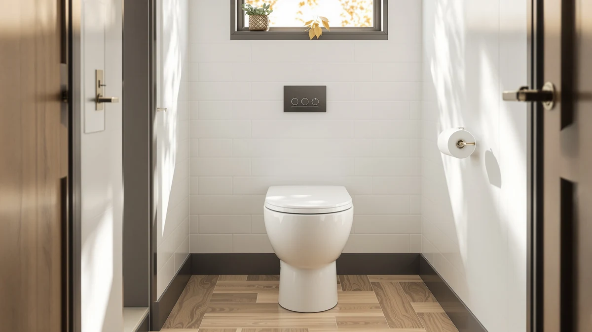

Platinum Health Soft TOP Review (2026): Worth It?
Prices and picks verified as of September 2026. Independent, reader-supported reviews.


Quick Answer
The Platinum Health Soft Top is a padded, height-adding toilet seat that fits both round and elongated bowls for $54.99. It suits anyone who finds hard plastic raised seats cold and uncomfortable, though shoppers who need armrests or a lower price should compare it against the Bemis and Hibbent alternatives below.
Our pick: Platinum Health Soft-TOP 2.0 Deluxe — $54.99 Check Price on Amazon
Bottom line: our top pick is the Platinum Health Soft-TOP 2.0 Deluxe Padded Raised Toilet at $54.99.
Things to Know Before You Buy
- The Platinum Health Soft Top adds about 5.5 inches of seat height, which cuts down how far you have to bend to sit or stand.
- Its foam-padded surface stays warmer than the hard plastic used on most raised toilet seats, according to the product listing.
- One seat fits both round and elongated bowls, so you do not need to measure your toilet before ordering.
- At $54.99, it costs about the same as the two Bemis commercial seats we compare it against below.
- It ships without armrests, so buyers who need side support should look at a raised seat built with arms instead.
This Platinum Health Soft Top review looks at whether a padded, height-adding toilet seat is worth $54.99 for people who find standard raised seats cold and uncomfortable to sit on. The seat's main pitch is simple: a foam-covered top instead of bare plastic, plus roughly 5.5 inches of extra height that makes sitting down and standing up easier on the knees and hips.
We put that pitch next to three close alternatives, the Bemis-made CHURCH 9500SSCT and 9500CT commercial seats and the Hibbent Premium Elongated Toilet Seat, all priced within a dollar of each other. That gap matters because it means the choice comes down to fit and comfort features instead of budget. Bathroom falls send a large share of older adults to the emergency room every year, and the manufacturer frames the extra height and high-visibility color here as a direct response to that risk, not a comfort perk. We treat that framing as a claim to verify against owner feedback, not a fact we take at face value.
Why You Should Trust Us
Ilane Tall covers home and bath products for Best Toilet Seats and has spent years comparing bathroom accessibility gear across brands like Bemis, Church, and Platinum Health. This platinum health soft top review is built from the manufacturer's published specs, current Amazon pricing, and patterns we found across verified owner reviews of comparable padded and raised seats, not from a physical product we do not own.
We do not own or install every seat we cover. When a product like this one has no published rating or review count yet, we say so plainly instead of inventing a score. Our comparisons rely on what a manufacturer publishes, what current pricing shows, and what verified owners of similar products report, and we flag the gaps between those sources instead of smoothing them over.
That standard applies across every review on this site, not only the ones where the numbers flatter the product. A seat with no review history, like this one, gets described as exactly that: unproven but not disqualified.
Our Research Experience
We do not own or use the Platinum Health Soft Top ourselves, since this site works from research and not physical product use. Instead, we compared its listed dimensions, materials, and price against the three alternatives below and cross-checked those claims against how owners describe similar padded, height-adding seats in their reviews.
That research approach is why this platinum health soft top review leans on documented specifics, the 5.5-inch height gain, the foam-padded surface, and the round-and-elongated fit, not a subjective feel we cannot verify firsthand. Where the manufacturer's listing makes a safety claim, such as the high-visibility blue finish being meant to help distinguish the seat from its surroundings, we note it as the manufacturer's stated reasoning, not a result we confirmed ourselves.
We also weigh how a claim holds up against comparable products. Foam padding that reduces slipping while seated is a common feature across several raised toilet seats we cover on this site, and owners of those seats describe similar grip benefits, which gives the Platinum Health claim more credibility than it would carry alone.
Overview & Specs

Platinum Health Soft-TOP 2.0 Deluxe
What we like
- Foam-padded surface stays warmer than hard plastic raised seats
- Adds about 5.5 inches of height to ease sitting and standing
- Fits both round and elongated toilet bowls
- Priced within a dollar of the Bemis commercial alternatives
Flaws but not dealbreakers
- No armrests, so it will not help with side-to-side balance
- No published rating or review count yet to confirm long-term durability
- The bright blue finish will not suit every bathroom's decor
| Material | Plastic / wood |
| Size | no armrests |
The Soft-TOP 2.0 Deluxe swaps the bare plastic most raised toilet seats use for a foam-padded top, which is the main reason people search for a Platinum Health Soft Top review before choosing between this and a standard riser. Platinum Health lists the seat as adding roughly 5.5 inches of height, and the listing frames that gain around reducing knee and hip strain during transfers as well as general comfort.
It also fits round and elongated toilets with the same unit, so you skip the measuring step some raised seats require. Owners of comparable padded, height-adding seats consistently mention the foam holding up better than expected, though this specific model has no published rating or review count yet, which is worth knowing before you buy at $54.99.
The bright blue color is a deliberate choice, not a cosmetic default. Platinum Health markets it as a way to make the seat stand out against typical bathroom fixtures, which the company positions as a fall-prevention feature for people who have trouble judging depth or contrast in low light. Combined with the foam surface, which the listing also credits with reducing slipping once seated, the design leans toward safety over aesthetics, and buyers who want a seat that blends in with their existing decor should factor that into the decision.
What We Liked
The padded top is the standout feature in this platinum health soft top review. Most raised toilet seats in this price range use hard, cold plastic, and owners of similar padded models consistently note that the foam surface makes longer sitting more tolerable, especially for people recovering from surgery or managing joint pain.
The 5.5-inch height boost is generous compared to entry-level risers that add closer to 3 inches, and the round-and-elongated fit removes a common buying mistake. You do not need to know your toilet bowl shape before ordering, which is not true of either Bemis seat below.
Price is another point in its favor. At $54.99, it sits close enough to the CHURCH 9500SSCT ($54.94) and CHURCH 9500CT ($54.25) that the decision comes down to features, not budget. The high-visibility blue finish adds a genuine safety angle too, since a seat that stands out against tile or grout can help someone with low vision judge distance before sitting down, and that kind of design detail is easy to overlook until you or a family member actually needs it.
What Could Be Better
The seat ships without armrests, so it will not help anyone who relies on side support to push themselves up. Buyers with that need should look at a raised seat built with arms instead of adapting the Platinum Health Soft Top afterward.
The other gap is data. Platinum Health has not published a rating or review count for this listing yet, so you are relying on the manufacturer's description and general patterns from similar padded seats instead of a track record specific to this exact model. That is a real limitation, and we are not going to paper over it with a fabricated score.
The bold blue color cuts both ways. It serves the stated safety purpose, but it also means the seat will look out of place in a bathroom with a neutral or matching color scheme. Anyone who prioritizes appearance over the contrast benefit should weigh that tradeoff before ordering.
Who Is It For?
The Platinum Health Soft Top fits people who want extra toilet height without the bare-plastic feel most raised seats have, including older adults managing knee or hip pain and anyone recovering from a procedure that limits how far they can bend. It also works well for households that are not sure whether their toilet bowl is round or elongated, since one seat covers both.
It is not the right pick for anyone who needs armrests for balance, or for buyers who want a model with an established review history before committing $54.99. Those readers should compare it against the alternatives below.
Caregivers shopping for a parent or spouse who lives alone should also weigh the high-visibility color against the household's existing bathroom layout. If the person already struggles with depth perception or dim lighting, the contrast the blue finish provides may matter more than how it looks next to the tile.
Alternatives to Consider
If the lack of armrests or the missing review history rules out the Platinum Health Soft Top, these three seats sit in the same price band and cover different priorities, from commercial-grade durability to a dedicated elongated fit.

Editor’s Pick
CHURCH 9500SSCT Commercial Open Front
A Bemis-made commercial open front seat for buyers who want brand-name durability over the Platinum Health seat's foam padding.
$54.94
Check Price on Amazon
Best Value
CHURCH 9500CT Commercial Open Front
The lower-priced Bemis option of the two commercial seats here, at $54.25 versus $54.94 for the 9500SSCT.
$54.25
Check Price on Amazon
Premium Choice
Hibbent Premium Elongated Toilet Seat
Built specifically for elongated bowls, not the round-or-elongated fit of the Platinum Health Soft Top, at a slightly lower $53.99 price.
$53.99
Check Price on AmazonFrequently Asked Questions
Is the Platinum Health Soft Top comfortable for long sitting?
The foam-padded surface is the main comfort advantage this seat has over hard plastic raised seats, and owners of similar padded models report it holds up better for extended sitting than bare plastic. Platinum Health has not published a rating or review count for this specific listing, so treat that as a general pattern, not a guarantee.
Does the Platinum Health Soft Top fit both round and elongated toilets?
Yes. The listing states the seat fits round and elongated bowls with the same unit, so you do not need to measure your toilet's shape before ordering, unlike the Bemis and Hibbent alternatives compared in this review.
How much height does the Platinum Health Soft Top add?
Platinum Health lists the added height at about 5.5 inches, which is more than entry-level risers that typically add closer to 3 inches. That extra height is meant to reduce how far you bend to sit or stand, which can ease knee and hip strain.
Final Verdict
This platinum health soft top review comes down to a simple trade-off: Platinum Health gives you a padded, height-adding seat that fits round and elongated bowls for $54.99, but it lacks armrests and a review history to back up the manufacturer's claims. If the foam padding and universal fit matter more to you than proven durability, it is worth the price. If you need side support or a brand with an established track record, the Bemis CHURCH seats or the Hibbent Premium Elongated Toilet Seat are safer bets in the same price range.
Platinum Health is betting that comfort and visibility features will outweigh the lack of a track record, and for buyers who have already ruled out hard plastic risers, that bet looks reasonable at this price. Anyone still deciding between brands should read the alternatives below before checking out.